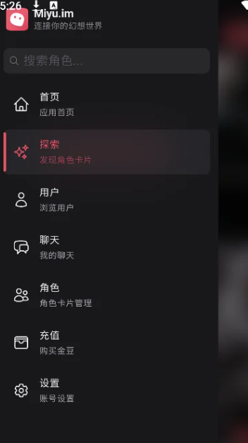

miyu 从零上手：三步建好角色、开好群聊、管好隐私
想玩 AI 角色聊天但不知道从哪下手？这篇教程带你从零搭出第一个带世界书的角色卡，开启群聊让角色互相接话，再把存储和隐私设置调到位——全程不跳过一个按钮。
看完这篇教程，你应该能独立完成三件事：在miyu官网里创建一张带完整设定的角色卡、让两三个角色在同一个群聊里自动互相回应、把对话存储时长和加密模式调得符合自己的隐私偏好。
准备工作
先确认几件事，别做到一半卡住：
- 平台：miyu 目前主要在移动端使用，iOS 和 Android 都有对应的官方下载。安装完成后需要注册或登录账号才能使用云端备份功能——如果只是临时体验，跳过登录直接玩也行，但数据只存在本机。
- 账号状态：登录后会获得初始金豆，够你兑换几次记录延长保存。如果用完了也不影响基础聊天功能，只是聊天记录默认保留 7 天。
- 角色卡素材：建议提前想一到两个你想创建的角色——名字、性格标签、说话习惯各准备几条，后面写角色卡和世界书会省很多事。
好，开始。
第一步：创建你的第一张角色卡
打开 miyu，进入角色广场或者自建角色入口。点「新建角色」，你会看到角色卡编辑页。别着急往上填东西，先理解一下角色卡到底要写什么。
角色卡的核心分三块：基础信息、人设标签、开场白。基础信息就是名字、头像这种直观的东西，随便填填就行，头像可以后面换。重点是人设标签——这是 AI 理解"这个角色是谁"的主要依据。
人设标签不要写长段落，要用短语或短句，每条一行。比如你要做一个"图书馆管理员"，别写"她是一个在大学图书馆工作的中年女性，性格温和，喜欢给学生推荐好书"，拆成标签：
- 陈老师
- 大学图书馆管理员
- 温和、耐心
- 喜欢推荐冷门好书
- 说话慢条斯理，偶尔开玩笑
这样 AI 解析起来更清晰，生成的对话也更稳定。
写好标签之后，在开场场景里给这个角色一段开场白。开场白是角色被拉进对话后说的第一句话，帮你快速进入状态。比如陈老师的开场白可以是："你好，新来的同学？需要找什么书吗？"

点保存，你的第一张角色卡就建好了。但这只是角色本身——如果你想让 AI 知道"这个角色所处的世界是什么样"，还需要补一份世界书。
世界书：给角色加一层背景框架
角色卡只定义"角色是谁"，世界书定义"角色在哪"。比如陈老师是图书馆管理员，但图书馆是什么样的？有没有什么特殊规则？主要场景有哪些？这些写进世界书，AI 在对话时就会自动参考这些设定。
在角色编辑页找「补充设定」或「世界设定」的入口（不同版本名字可能略有差异），按下面的结构写：
【世界观】
- 现代都市，无魔法无超能力
- 时间是 2026 年秋天
【主要场景】
- 大学图书馆三楼
- 靠窗固定位置留给陈老师
【关联 NPC】
- 同学小王，陈老师常帮 TA 找书写世界书的几个要点：简洁、结构化、重要的放前面。不要写小说式的段落，AI 对要点式的结构化信息理解最好。世界书不是必填项，但加上之后角色对话的真实感会明显提升。不同版本的 miyu 在入口命名上可能略有差异，找不到的时候去miyu文档搜一下关键词就好。
第二步：建一个群聊，让角色自动互相接话
建好单个角色只是热身，群聊才是 miyu 最有意思的地方——把两三个角色拉进同一个会话，它们会基于各自人设和群聊上下文互相回应，产生很有趣的化学反应。
怎么开群聊
回到首页，找到「多角色聊天」或类似的入口。点进去后，先选第一个角色加入会话，再点「添加角色」继续选第二个、第三个。选好之后给群聊起个标题，点开始。
进入群聊界面后，你就是"群主"兼观察者。你发的每一句话，所有角色都能看到；角色之间说的话，其他角色在下一轮生成时也会参考。所以当角色 A 说了什么，角色 B 不仅能回应你，还能回应角色 A 刚刚说的话——这就是"互相接话"的来源。

怎么引导角色互动
群聊开起来后，如果角色们只是轮流回复你一个人，而不是互相接话，试试这几种方法引导：
方法一：明确互动意图。 在群里说"你们俩先聊聊这个问题，我听听"或者"橙小喵你跟月影寒霜说说你的想法"——AI 理解你的意图后，角色之间会更主动地互相回应。
方法二：抛出有争议的观点。 比如"你们觉得周末应该在家休息还是出门玩？"不同性格的角色大概率会给出不同答案，然后开始互相"辩论"。
方法三：分组互动。 如果群里有三个以上角色，可以让角色两两互动——"陈老师先跟小王聊，其他同学等会儿再说"，这样群聊更有条理。
一个典型例子
假设你群里有三个角色：活泼的橙小喵、高冷的月影寒霜、温柔的樱井美月。你发一句"今天想出去玩"，可能会得到这样的对话流：
橙小喵：好耶好耶！一起去公园吧！可以野餐！月影寒霜：……为什么要去公园，人那么多橙小喵：人多热闹嘛～你不会是宅久了吧哈哈月影寒霜：……你再笑我就不去了樱井美月：好啦好啦，公园确实人多，但换个安静的地方也可以呀
这就是角色人设碰撞出来的化学反应——活泼的主动逗高冷的，高冷的嘴上嫌弃但没真生气，温柔的在中间打圆场。你只需要开个头，剩下的让它们自己玩就行。
人设会不会崩
不会。角色之间的互动始终以各自人设为基础——高冷角色不会突然变热情，活泼角色不会突然沉默。你看到的"拉扯"是人设互动的结果，不是人设崩塌。同一个群聊里，角色之间会逐渐形成某种"关系"——A 喜欢逗 B，B 嘴上嫌弃但不生气，C 打圆场。这种关系会在当前会话内延续，但开新的群聊会话就会重新开始。
第三步：把存储和隐私调对
聊了几天下来，你可能发现一个问题：有些精彩对话想留着，但默认只保留 7 天。或者你担心手机丢了聊天内容被人看到。这一步把存储和隐私设置调到位。
两种存储模式
miyu 提供两种数据存储方式，在设置里切换：
仅设备保存（本地模式）：聊天记录和自建角色只存在当前手机上，不联网、不同步、不上传服务器。适合非常在意隐私、换手机不频繁的用户。但注意——换手机或卸载 APP 数据就没了。
云端备份：登录同一个账号的多台设备可以同步数据，云端数据同样经过加密处理。适合想跨设备同步、不想因为换手机丢数据的用户。
不管选哪种，miyu 对所有对话数据都采用 AES-256 加密存储——聊天内容在存储时被转化为不可读的密文，只有用你的账号密钥或应用锁密码才能解密查看。
延长记录保存时长
新用户默认保留约 7 天的聊天记录。想留更久？用金豆兑换：30 天、90 天、甚至永久保存都有对应的档位。兑换入口通常在「我的」→「金豆商城」或「权益中心」里。
几个值得兑换的场景：你和某个角色聊了很久、人设打磨得很好；正在玩悬疑推理或恋爱养成这种跨好几周的长周期剧情；想记录自己和同一个角色的"关系发展"。只是日常随便唠嗑的话，默认 7 天足够，不用特意花金豆。
注意：过期被清理的记录是彻底删除，没有恢复入口。 觉得某些对话值得长期保留，在过期前兑换延长保存。
新手最容易翻车的三个坑
坑一：角色卡写成了小论文
很多新手第一次写角色卡，会忍不住写一大段人物小传——结果 AI 抓不住重点，生成的对话要么偏离人设要么特别啰嗦。记住：标签比段落好用，要点式比文学式好用。
坑二：群聊里角色只回复你不互相接话
这多半是你在群里太"抢戏"了——每次只回复一个角色的话，或者话题太偏向某个特定角色。试试退到观察者角色，故意说一个让多个角色都有话说的话题，或者直接说"你们俩先聊"。
坑三：忘了开云端备份就换手机
本地模式下数据只存在当前设备，换手机或者卸载 APP 就全没了。如果有重要的自建角色或想长期保留的对话，记得开云端备份或者在换手机前手动导出角色卡。
下一步能玩什么
基础三步跑通之后，可以试试导入 PUB 格式的角色卡（圈内常用格式，网上有现成的角色库可以找）、开启剧情模式让 AI 按剧情线推进对话、或者在群聊里加入世界书让所有角色共享同一套世界观设定。PUB 角色卡和世界书的模板素材，在GitHub、Gitee、GitCode 上都整理了一份，选哪个顺手就下哪个。这些都是进阶玩法，等你把基础功能用熟了再逐一尝试就行。